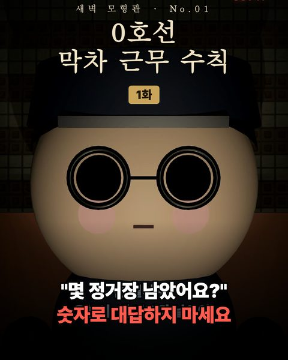

CHANNELS · 인스타 운영
새벽 모형관 @sae_byeokdio
2026.11.24 첫 게시
규칙 괴담은 '보는' 콘텐츠라 금방 지나칩니다. 그래서 수칙서 6번을 비워 두고, 매 화 끝에서 시청자가 댓글 A/B로 다음 행동을 고르게 했습니다. 한 시리즈는 하룻밤 5화, 선택이 모여 마지막 화의 6번 규칙이 됩니다.
- 장르나폴리탄 규칙 괴담 × 3D 디오라마 애니메이션
- 게시화·목·토 밤 10시 30분 개관
- 결과물대본집 1~5화 · 1화 3D 애니메이션(51초) · 브랜드 키트
피드

@sae_byeokdio새벽 모형관
새벽 모형관 · 나폴리탄 규칙 괴담마지막 선택은 여러분 몫 👉 댓글 A/B화·목·토 밤 10시 30분 개관


실제로 만든 작품으로 꾸민 프로필 화면입니다(좋아요·팔로워 숫자는 넣지 않았어요).
이렇게 처리합니다
시청자가 머물게 — 매 화 엔딩을 A/B 선택 카드로 끝내고, 가장 많은 선택으로 다음 화 앞 20초가 갈라졌다가 다시 합쳐지는 구조로 제작량을 화당 1편 + 앞부분 2종으로 줄였습니다.
설정이 꼬이지 않게 — 시계·날짜·규칙·누적 변수를 연속성 점검표로 관리해 5화 내내 같은 밤이 이어지게 했습니다.
채널을 처음 열 때 — 아이디 후보를 공개 페이지로 조회해 고르고, 프로필·하이라이트 4종·썸네일·해시태그 5개 규칙까지 계정 가이드로 정리했습니다.
링크
새 창으로 열려요